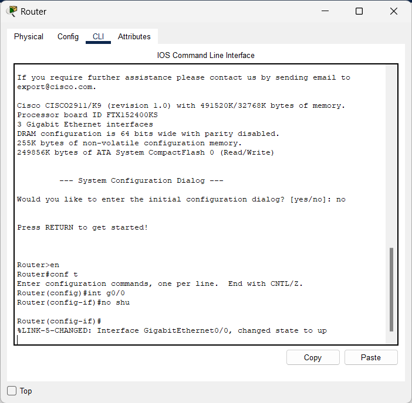
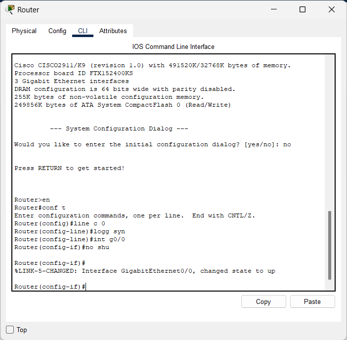
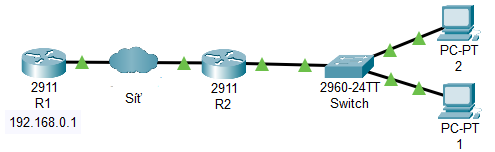
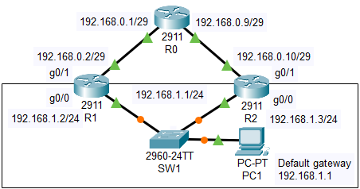
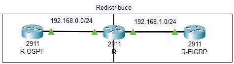
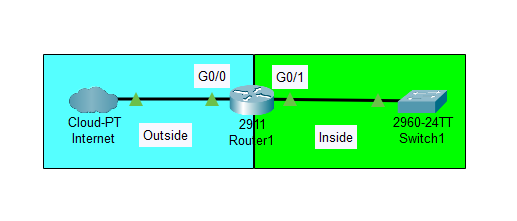

Vysvětlivky závorek
adresa → Pokud maska x.x.x.x/24 Pak adresa = x.x.x.1-254
adresa sítě → x.x.x.x/24 Pak adresa sítě = x.x.x.0
maska → 255.255.255.0
wildcard → 0.0.0.255
x/id -> číslo /*Pro zjištění rozsahu dej za příkaz ?*/
g0/0/0 → slot/modul/port
Router> enable en
Router# config terminal conf t
Router(config)# hostname R h R
R(config)# line console 0 lin c 0
R(config-line)# logging synchronous logg s /*Odřádkovávání. Dost užitečné zapnout, protože zajišťuje lepší přehlednost při psaní příkazů */
Ukázka
| Bez logging synchronous | S logging synchronous |
|  |  |
Rušení příkazů
Pro vymazání některého z příkazů příkaz opiště a před něj napište no
R(config)# no hostname R no h R
Router(config)#
Interface
R(config)# interface gigabitEthernet0/0/0int g0/0/0
R(config-if)# ip address [adresa] [maska]ip add [adresa] [maska]
R(config-if)# no shutdown no shu
R(config-if)# shutdown shu
DHCP
R(config)# ip dhcp pool [název]
R(dhcp-config)# network [adresa sítě] [maska]
R(dhcp-config)# default-router [adresa]
R(dhcp-config)# dns-server [adresa]
R(config)# ip dhcp excluded-address [adresa] /*Vyloučená adresa*/
/*Pokud máme adresu, kterou nechceme aby DHCP někomu dala jednoduše pro ní uděláme vyjímku*/
/*Pokud chci DHCP na jiném routeru můžu odkazovat na DHCP pool na hlavním routeru*/
R(config-subif)# ip helper-address [adresa] ip help [adresa]
/*Jaký pool se přiřadí rozhoduje adresa na interfacu*/
Příklad

R1(config)# ip dhcp pool dhcp
R1(dhcp-config)# network 192.168.1.0 255.255.255.0
R1(dhcp-config)# default-router 192.168.1.1
R1(dhcp-config)# dns-server 8.8.8.8
R2(config)# interface gigabitEthernet0/0/0 int g0/0/0
R2(config-if)# ip address 192.168.1.1 255.255.255.0 ip add 192.168.1.1 255.255.255.0
R2(config-if)# ip helper-address 192.168.0.1 ip help 192.168.0.1
VLAN
R(config)# interface gigabitEthernet0/0/0 int g0/0/0
R(config-if)# no shutdown no shu
R(config)# interface gigabitEthernet0/0/0.[X] int g0/0/0.[X]
R(config-subif)# encapsulation dot1Q [X] en d [X]
R(config-subif)# ip address [adresa] [maska] ip add
R(config-subif)# ip helper-address [adresa] ip help /*Nastavujeme ve chvíly, kdy máme hotový DHCP na hlavním routeru*/
Trunk
/*Nastavujeme na portu, který jde do routeru. Důvod: Aby pustil všechny VLANy ke SWITCHi.*/
SW(config) int f0/24
SW(config-if) switchport mode trunk sw m t
Do PC
/*1. Založíme vlanu na Switchi
Jediný co je nutný dodržet je že "číslo vlany = číslo encapsulace". Jedině takto pozná switch pro jakou vlanu je packet*/
SW(config) vlan [X]
/*2. Vlanu přiřadíme na interface. Tím určíme že počítač připojený v tomto interfacu bude patřit do určité VLANy. To je vše :)*/
SW(config-if) int f0/1
SW(config-if) switchport mode access sw m a
SW(config-if) switchport access vlan [X] sw a v
HSRP
Hot standby routing protocol
R1(config)# interface gigabitEthernet0/0 int g0/0
R1(config-if)# standby 1 ip [adresa] st 1 ip [adresa]
R1(config-if)# standby 1 priority [0-255] st 1 pri [0-255]
R2(config)# interface gigabitEthernet0/0 int g0/0
R2(config-if)# standby 1 ip [adresa] st 1 ip [adresa]
R2(config-if)# standby 1 priority [0-255] st 1 pri [0-255]
Příklad

R1(config)# interface gigabitEthernet0/0 int g0/0
R1(config-if)# standby 1 ip 192.168.1.1 st 1 ip 192.168.1.1
R1(config-if)# standby 1 priority 200 st 1 pri 200
R2(config)# interface gigabitEthernet0/0 int g0/0
R2(config-if)# standby 1 ip 192.168.1.1 st 1 ip 192.168.1.1
R2(config-if)# standby 1 priority 100 st 1 pri 100
Routování
RIPv2
R(config)# router rip
R(config-router)# version 2
R(config-router)# network [adresa sítě]
EIGRP
R(config)# router eigrp [id]
R(config-router)# no auto-summary
R(config-router)# network [adresa sítě] [wildcard]
OSPF
R(config)# router ospf [id]
R(config-router)# default-information originate
R(config-router)# network [adresa sítě] [wildcard] area 0
Redistribuce
Teorie
Redistribuce se dělá na jednom Routeru a musíš udělat redistribuci pro oba routovací protokoly. Tzn pokud máš jednu síť eigrp a druhou ospf tak router, který je mezi těmito sítěmi musí umět oba routovací protokoly a obě musí mít pravidlo jak překládat (redistribuovat) pro tu druhou.
RIPv2
/*EIGRP*/
R(config)# router rip
R(config-router)# redistribute eigrp [id] metric 5
/*OSPF*/
R(config)# router rip
R(config-router)# redistribute ospf [id] metric 3
EIGRP
/*RIPv2*/
R(config)# router eigrp [id]
R(config-router)# redistribute rip metric 10000 10 255 100 1000
/*OSPF*/
R(config)# router eigrp [id]
R(config-router)# redistribute ospf [id] metric 10000 100 255 1 1500
Metrika
- 1-4294967295> Bandwidth metric in Kbits per second
- 0-4294967295> EIGRP delay metric, in 10 microsecond units
- 0-255> EIGRP reliability metric where 255 is 100% reliable
- 1-255> EIGRP Effective bandwidth metric (Loading) where 255 is 100% loaded
- 1-65535> EIGRP MTU of the path
OSPF
/*RIPv2*/
R(config)# router ospf [id]
R(config-router)# redistribute rip subnets
/*EIGRP*/
R(config)# router ospf [id]
R(config-router)# redistribute eigrp [id] subnets
Příklad

R(config)# router ospf 1 r o 1
R(config-router)# default-information originate de o
R(config-router)# network 192.168.0.0 0.0.0.255 area 0 net 192.168.0.0 0.0.0.255 a 0
R(config-router)# redistribute eigrp 1 subnets re e 1 s
R(config)# router eigrp 1 r e 1
R(config-router)# no auto-summary no a
R(config-router)# network 192.168.1.0 0.0.0.255 net 192.168.1.0 0.0.0.255
R(config-router)# redistribute ospf 1 metric 10000 100 255 1 1500
NAT
R(config)# interface gigabitEthernet0/1 int g0/1
R(config-if)# ip nat inside
R(config)# interface gigabitEthernet0/0 int g0/0
R(config-if)# ip nat outside
R(config-if)# ip address dchp ip add dchp
R(config)# ip access-list standard [název]
R(config-std-nacl)# permit [adresa sítě] [wildcard]
R(config)# ip nat inside source list [název] interface g0/0 overload
Příklad
R(config)# ip access-list standard NAT
R(config-std-nacl)# permit 192.168.0.0 0.0.0.255
R(config)# ip nat inside source list NAT interface g/0 overload
Etherchannel
SW(config)# interface range fastEthernet0/21-24 int r f0/21-24 /*Rozsah potrů, u kterých chceme stejnou komunikaci*/
SW(config-if-range)# channel-group 1 mode active channel-g 1 m ac
/*Použitím active aktivujeme protokol LACP. Pokud máme více SW do kruhu použijeme na 1 channelu mod passive*/
/*Toto uděláme na obou SW (Na obou může být různý range). Nezapomeň na Trunk*/
Loopback
Teorie
Polopatě: Router může mít několik interfaců s několika adresami. V praxi to znamená, že pro každou síť má router nějaké označení (tím myslím adresu), ale žádnou jednotnou, které by určovala že to je zrovna tento konkrétní router. Loopback tento problém řeší. Loopback je virtuální interface a přidáním jedinečné adresy můžeme router "označit".
Výhody: Jelikož je virtuální tak je vždy v provozu a viditelný ze všech interfaců (musí být přidán do routovacího protokolu). V praxi to znamená že pokud se chci připojit pomocí SSH na konkrétní Router nemusím řešit jakou linku (adresu) zadat. Stačí zadat adresu loopbacku a pokud je Router v provozu a je zapojen do minimálně 1 linky tak si síť najde vždy cestu. Tato adresa se dá použít i pro ip helper-address, ale ze začátku to nedoporučuju
Použití: Jako koncové body pro přemostění RSRB a DLSW+
Maska: 255.255.255.255 - Pokud nám stačí 1 adresa pro zařízení
R(config)# interface loopback 1 int loopback 1
R(config-if)# ip address [adresa] [maska] ip add [adresa] [maska]
Příklad
R(config)# interface loopback 1 int loopback 1
R(config-if)# ip address 192.168.255.1 255.255.255.255 ip add 192.168.255.1 255.255.255.255
SSH/TELNET
Teorie
Jde použít jak pro Router tak i Switch (Pro Switch je ale potřeba přidat adresu pro vlan 1)
Pro Switch
/*Kód níže + toto*/
SW(config)# interface vlan 1 int vlan 1
SW(config-if)# no shutdown no shu
SW(config)# ip address [adresa] [maska] ip add [adresa] [maska]
R(config)# ip domain name ujep.local
R(config)# crypto key generate rsa
How many bits in the modulus [2048]: 1024
R(config)# ip ssh version 2
R(config)# line vty 0 4
R(config-line)# transport input all
R(config-line)# login local
R(config-line)# password [heslo]
R(config-line)# exit
R(config)# username [jmeno] password [heslo]
R(config)# enable secret [heslo]
ACL (aka: Access List)
Teorie
Ok. Tohle je o něco zajímavější, ale není to těžký a pokusím se to co nejlépe popsat o co tady jde.
Bez ACL může každý host komunikovat libovolně jakýmkoliv jiným hostem (myslím tím PC).
Pomocí ACL určíme kdo s kým může komunikovat. Resp v následujících metodách nastevení ACL určíme že každý může komunikovat VLAN, ale té omezíme komunikaci do ostatních (=packet z cizí k nám může dorazit, ale my neodpovíme pokud to máme v ACL zakázaný)
/*Extended ACL metoda*/
R(config)# ip access-list extended [jméno]
R(config-ext-nacl)# deny ip any [adresa sítě] [wildcard]
R(config-ext-nacl)# permit ip any any
R(config)# interface [port].[X]
R(config-subif)# ip access-group [jmeno] in
/*Extended ACL 2.metoda*/
R(config)# access-list [100-199] deny ip any [adresa sítě] [wildcard]
R(config)# access-list [100-199] permit ip any any
R(config)# interface [port].[X]
R(config-subif)# ip access-group [100-199] in
Příklad
Dodělám později xd
Show
Router# show ip interface brief sh ip int brief
Router# show interface sh int
Router# show interface gigabitEthernet0/0/0 sh int g0/0/0
Router# show running-config sh run
Router# show ip dhcp binding
Router# show etherchannel summary
Router# show standby
Tovární nastavení
Router# write erase
Router# reload
Seznam co přidat
- MAC filtering
- DNS Server
- WAMP server
- BVI interface
- Management VLAN